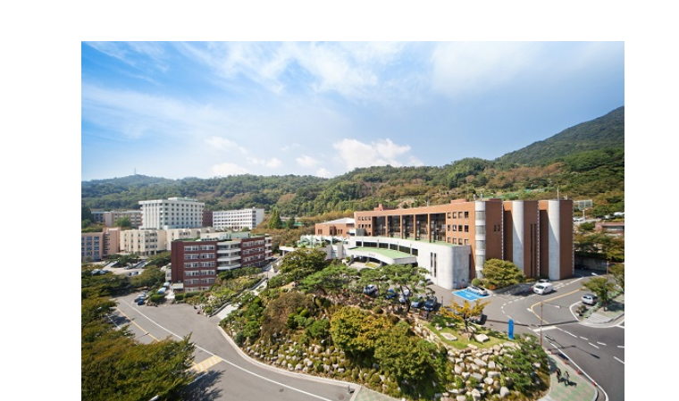

경남대학교는 경상남도 창원시 마산합포구 및 의창구에 위치한 4년제 사립종합대학이다. 설립자는 대한민국 임시정부 소속이었던 신익희 선생과 김구, 이승만 선생이다. 1946년 9월 국민대학관으로 발족하여 1982년 3월 종합대학으로 승격하였다. 학생수 기준으로 경상남도 최대 규모의 사립 대학이며, 창원시 소재 대학 중 최대 규모 대학이다.2024년 기준 개교 78주년을 맞이하였다.
본교는 경상남도 창원시 마산합포구 월영동에 있고, 평생교육원은 옛 창원군청 자리인 경상남도 창원시 마산합포구 문화동, 산학융합캠퍼스인 팔용캠퍼스는 경상남도 창원시 의창구 팔용동, 대학의 핵심 씽크탱크라고 보여지는 경남대학교 극동문제연구소는 서울특별시 종로구 삼청동에 위치해 있다.

2.월영지가 무엇인가?
월영지, 달그림자란 뜻이 담긴 우리 대학 연못이다. 정문 가까이에 위치한 월영지는 제1공학관, 고운관, 10·18광장과 접해있다.영지 주위에는 많은 나무와 비석 등을 찾아볼 수 있다. 벚꽃과 영산홍은 이미 유명하며 밑동이 2개이고 줄기는 1개인 연리지나무도 있다. 이 연리지나무는 배롱나무로 굽어지며 자라는 것이 특징이다. 예부터 연인들이 이 나무 아래에서 사랑을 속삭였다고 한다. 월영지 옆 잔디밭에서 빗돌도 찾아볼 수 있다. ‘3·15 민주 정신으로 일어난 10·18 부마민주항쟁의 그날을 기억하며!’라고 쓰인 빗돌은 3·15와 10·18의 주역인 우리 대학을 기린다.
역사적으로 뜻깊고 가치 높은 월영지를 학우들이 마음 깊이 받아들이며 벚꽃 명소뿐만 아니라 자랑스러운 우리 대학 상징물로 여겼으면 한다. 이번 봄, 벚꽃도 즐기며 월영지에서 사색에 빠져보자.
3.인공지능 학과
경남대학교 인공지능학과는 최신 인공지능 기술과 빅데이터를 효과적으로 활용하여 핵심 인재를 양성하는 학과로 자랑스럽게 활동하고 있습니다. 인공지능 기술은 4차 산업혁명 시대의 주요 주인공으로 떠오르고 있으며, 우리 학과는 학생들이 인공지능 분야에서 우수한 역할을 할 수 있도록 뛰어난 교육과 연구 환경을 제공합니다. 또한, 현장에서 실무 경험을 쌓을 수 있는 기회를 풍부하게 제공하여 학생들이 실제 업무에 즉시 적용 가능한 능력을 키울 수 있도록 하고 있습니다.인공지능학과에서 주요한 학습 내용은 무엇일까?
4차 산업혁명 시대의 실무 경험을 통한 전문 인재 양성을 위해 다음과 같은 6개 모듈 및 트랙을 통해 전문성을 강조하고 있습니다.
1. 인공지능기초모듈I
2. 인공지능기초모듈II
3. 인공지능SW공통모듈
4. 정보응용모듈
5. 인공지능종합설계모듈
6. 제조AI트랙